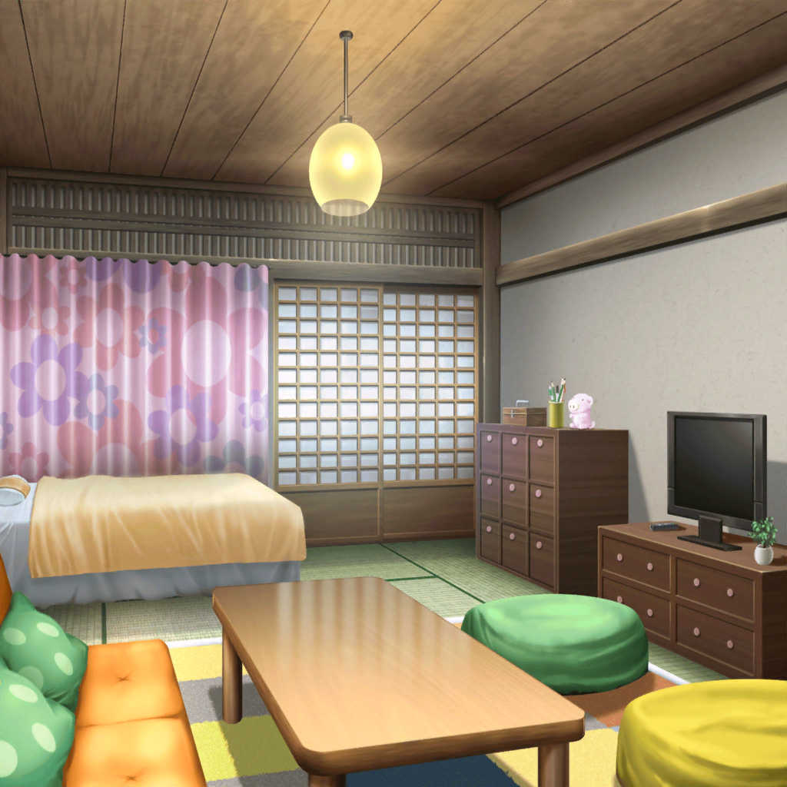
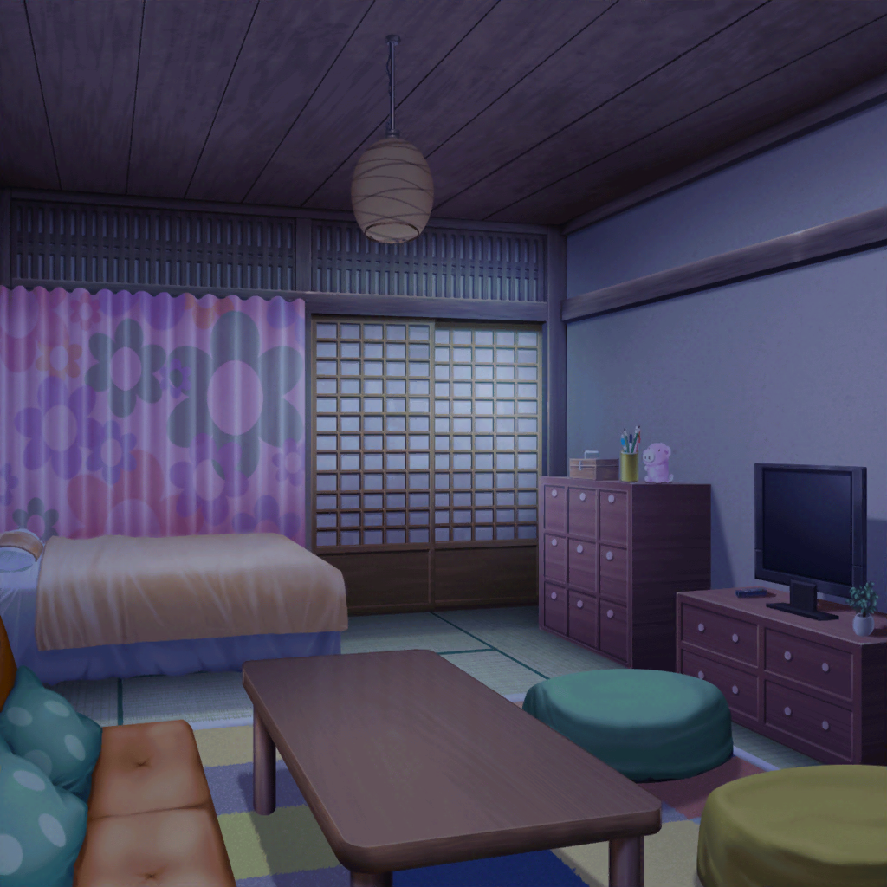

市ヶ谷家 有咲の部屋
香澄
はぁ～♪ いいお湯だった～！
沙綾
ずいぶんゆっくり入ってたねえ。
のぼせたかと思って、りみりんと心配してたよ
香澄
ごめーん。中でウトウトしちゃって
りみ
香澄ちゃん、頑張ったもんね
香澄
頭使いすぎてクタクタだよ～！
沙綾
とにかく、今日のうちに歌詞が完成してよかったよ。
あとは曲と合わせて仕上げるだけだね。
……だけ、って言うのもなんか変だけど
香澄
ここまで来たんだから大丈夫だよ！
さーや、りみりん、明日も頑張ろうね！
りみ
うん！
沙綾
なら、明日にそなえて早めに寝ないとね
たえ
——お布団、敷いたよ
香澄
あっ、ありがと、おたえ！
わーい一番乗り！
香澄
ダーイブッ♪
有咲
おい、布団に飛びこむなよ
香澄
あはは、フカフカで気持ちよさそうだったから、つい
たえ
安眠できそう
有咲
そりゃよかった。んじゃとっとと寝るぞ。
私は疲れた
香澄
ね、ね。ちょっとだけ、枕投げしない？
有咲
寝ろよ
香澄
寝るけど。
でも、せっかくみんなでお泊りなんだし。
何もせずに寝ちゃうのもったいないよー
りみ
確かに、そうかも……
有咲
だからって、枕投げはないだろ。
ガキじゃあるまいし
たえ
えい
有咲
いてっ。
……やったな、この！
たえ
キャッチ。
香澄、パス
香澄
ナイス、パース！
いっくよ～！ えーいっ！
沙綾
わっ！
ちょっと、もう。なんで私～？
香澄
さーやもやろうよ！ ほら、ほら！
沙綾
しょうがないなあ。ちょっとだけね。
それっ！ りみりん、パス！
りみ
えっ？ わわっ、私～！？
香澄
ふぃー……遊んだ、遊んだ
有咲
ハァ、ハァ……もうこんな時間じゃん。
いいかげん満足したな？
電気消すぞ？
沙綾
はーい、消灯～
香澄
……

香澄
暗くなったら急に眼がさえてきちゃうこと、あるよね
有咲
いや、寝ろよ
たえ
怖い話、しようか。
これは、親戚の友達のバイト仲間が体験したことなんだけど——
りみ
ごくっ……
有咲
くだらねー。
私は今度こそ寝るぞ。寝るったら寝る
りみ
私も、そろそろ……ふわあ
香澄
そっかあ。それじゃあみんな、おやすみー
沙綾
ん。おやすみ
香澄
……
香澄
……さーや？
香澄
有咲？ りみりん？ ……みんな寝ちゃった？
たえ
どうしたの、香澄
香澄
ん。なんか、眠れなくって
たえ
曲……できるか、心配？
香澄
……ううん。そうじゃない。
楽しみなんだ。どんな曲ができるのか。
絶対、いい曲になるって思う。だから、ドキドキしちゃうんだ
たえ
私も。この五人なら、最高の曲ができると思う。
みんなも、きっとそう思ってる
香澄
だよね、だよねっ。よ～し、明日も一日、頑張ろう！
たえ
うん、がんばろう。
じゃ、おやすみ……
 翌日
翌日
市ヶ谷家 蔵
香澄
♪～ッ……
りみ
……できた？
香澄
できたよ、最後まで通せた！
完成だーー！
沙綾
やったね。みんな、お疲れさま。
なんとか合宿中に終わってよかった～……
有咲
もう夕方じゃん。香澄が昨日遅くまではしゃいでたせいで、
こっちまで寝不足だっての。ふわ～あ……
香澄
ごめーん。でも、間に合ってよかったね！
今夜は思いっきり寝るぞ～！
沙綾
明日は学校あるけどね
香澄
あれ。そうだっけ……
りみ
ふふっ。寝坊しないように頑張らなくちゃね